Repeat the process a third time using 20% Aqueous Glycerol. Weigh the centrifuge tube to determine the approximate volume of entrained solvents, then proceed as described in 15E1.
Report exchangeable bases (cmolc/kg), expressed on an oven-dry basis, after adjusting for entrained liquid from the pre-treatment to remove soluble salts (as in Method 15A2). Use the air-dry moisture to oven-dry moisture ratio to convert to an oven-dry concentration. Refer to Method 2A1 for guidance with regard to this soil moisture calculation.
If positive errors for exchangeable Ca2+ due to gypsum are expected, determine the ‘true’ value from the following equations, all in the same units:
then
“True” exchangeable Ca2+ = (Measured exchangeable Ca2+ – Non-exchangeable Ca2+)
This method is identical to 15E1 except that a calculation, based on the amount of soluble Cl– present, is used to adjust for the apparent level of exchangeable Na+ present in the soil. This approximate correction for soluble Na+ is an alternative to chemical pre-treatment when EC (1:5, soil/water) exceeds 0.3 dS/m and NaCl is the dominant soluble salt.
Proceed as described in Method 15E1.
Convert mg Cl–/kg (from Method 5A1 or 5A2) to cmolcCl/kg by dividing by 354.5. On the assumption that all soluble Cl– is associated with Na+, calculate the corrected value as follows:
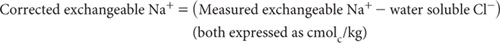
Report exchangeable Ca2+, Mg2+, and K+ (cmolc/kg) as determined from Method 15E1, and exchangeable Na+ as corrected above (cmolc/kg). Express results on an oven-dry basis. Use the air-dry moisture to oven-dry moisture ratio to convert to an oven-dry concentration. Refer to Method 2A1 for guidance with regard to this soil moisture calculation.
Report CECB and AEC as described for Method 15E1.
Concentrated salt solutions provide one alternative for the displacement of exchangeable bases and other cations from soils. Displacement, however, can be achieved at low solution ionic strength, provided the absorption affinity for soil colloids of the index cation selected is much larger than the absorption affinities of typical soil cations. Chhabra et al. (1975) demonstrated that the monovalent silver-thiourea complex (AgTU+) can serve this purpose. Subsequently, a single extraction method using unbuffered AgTU+ was found to be suitable for rapid determination of ECEC and exchangeable cations in soils dominated by low-activity clays with variable surface charges (Pleysier and Juo 1980). These researchers and Searle (1986) demonstrated that amounts of individual exchangeable bases extracted by both neutral NH4OAc and 0.01 M AgTU+ were usually highly correlated, although there can be differences. For example, Searle (1986) reported that NH4OAc could extract higher amounts of Ca2+ and Na+ in some soils. In contrast, 0.01 M AgTU+ appears able to extract more K+ than NH4OAc in soils containing interlayer K+ associated with vermiculite and partly weathered mica (Pleysier and Juo 1980). The reverse can also apply in other soils (Searle 1986).
This method is based on that reported by Blakemore et al. (1987). It involves equilibration of air-dry soil and 0.01 M AgTU+ for 16 h, with end-over-end shaking, followed by centrifugation and analysis of exchangeable bases. Sr2+ and Cs+ are included prior to analysis by AAS to prevent possible interferences from phosphate and ionisation, respectively. The residual extract is required for the determination of other ion exchange properties. As highly weathered soils of low ionic strength (e.g. I <0.01) usually contain low levels of salinity, there is no provision for removal of soluble salts.
0.01 M AgTU+
Dissolve 150 g thiourea [CS(NH2)2] in about 3 L deionised water in a 10 L container. Slowly add 5 L of deionised water containing 16.987 g silver nitrate (AgNO3) while stirring with a magnetic stirrer. Make volume to 10 L with deionised water.
Strontium Chloride/Caesium Chloride Solutions (only required if using an AAS analytical finish)
Stock Sr/Cs Solution
1 L contains 7.5 g Sr2+ and 25 g Cs+.
Dissolve 46 g strontium chloride (SrCl2.6H2O) and 63.6 g caesium chloride (CsCl) and dilute to 2 L with deionised water. Store in a plastic or borosilicate bottle.
1+3 Sr/Cs Diluting Solution
Dilute 106 mL Stock Sr/Cs solution to 1 L with deionised water. Store in plastic or borosilicate bottle.
1+9 Sr/Cs/AgTU Diluting Solution
Dilute 89 mL Stock Sr/Cs solution and 167 mL 0.01 M AgTU+ to 1 L with deionised water. Store in plastic or borosilicate bottle.
Caesium Chloride Solution
1 L contains 1.0 g of Cs+.
Dissolve 1.267 g caesium chloride (CsCl) and dilute to 1 L with deionised water. Store in plastic or borosilicate bottle.
Saturated Potassium Chloride
Add approximately 180 g potassium chloride (KCl) to 500 mL deionised water and mix well.
Mixed Primary and Secondary Standards for Ca2+, Mg2+, Na+ and K+
As for Method 15A1.
Table 15.14. Examples of dÕutŠns and concentratŠns for Ca2+ and Mg2+ Working Standards – 0.01 M AgTU+.
|
|
Equivalent soÕ content (cmolc/kg) of Ca & (final) following: |
|
mL of Secondary Standard in 500 mL |
Initial solutŠn concentratŠn (mmolcCa & Mg/L) |
1 + 3 dÕutŠn* of samples only |
1 + 9 dÕutŠn† of samples only |
Mixed Ca & Mg Secondary Standard (10 mmolcCa & Mg/L) |
|||
0.5 |
0.01 |
0.2 |
0.5 |
1.0 |
0.02 |
0.4 |
1.0 |
2.5 |
0.05 |
1.0 |
2.5 |
5.0 |
0.10 |
2.0 |
5.0 |
7.5 |
0.15 |
3.0 |
7.5 |
12.5 |
0.25 |
5.0 |
12.5 |
25.0 |
0.50 |
10.0 |
25.0 |
40.0 |
0.80 |
16.0 |
40.0 |
*Accurately dÕute sample extracts only with 1+3 Sr/Cs DÕuting SolutŠn if analysing by AAS. For ICPAES, substitute the 1+3 Sr/Cs DÕuting SolutŠn with 0.01 M AgTU+ Extracting SolutŠn.
†AAS analysis requires accurate dÕutŠn of sample extracts only with 1+9 Sr/Cs AgTU+ DÕuting SolutŠn. For ICPAES analysis, substitute this Sr/Cs DÕuting SolutŠn with 0.01 M AgTU+ Extracting SolutŠn.
Accurately dispense Mixed Ca2+ and Mg2+ Secondary Standards of required concentrations as indicated in Table 15.14 and Mixed Na+ and K+ Secondary Standards of required concentrations as indicated in Table 15.15 into 500 mL volumetric flasks. Add 125 mL 0.01 M AgTU+ and (if required for AAS analysis) 40 mL Stock Sr/Cs solution, mix well, and make to volume with deionised water. Store these solutions in the dark and discard should any precipitate develop with time.
Weigh 1.00 g of air-dry soil (<2 mm) into an 80 mL polypropylene centrifuge tube. Add 50.0 mL of 0.01 M AgTU+, stopper securely and mechanically shake end-over-end at ≈25°C for 16 h (overnight). Centrifuge until a clear supernatant is obtained.
Accurately dilute a portion of the sample supernatants only, either 1+3 or 1+9 with 1+3 Sr/Cs Diluting Solution (if analysing by AAS) or 1+9 Sr/Cs AgTU+ Diluting Solution (if analysing by ICPAES). Include a method blank throughout and retain for measurement of exchangeable bases.
As for Method 15A1 but using relevant instruments, standards, diluting solutions and blanks. Report exchangeable Ca2+, Mg2+, Na+ and K+ (cmolc/kg), expressed on an oven-dry basis. Use the air-dry moisture to oven-dry moisture ratio to convert to an oven-dry concentration. Refer to Method 2A1 for guidance with regard to this soil moisture calculation.
Searle and Lee (1984) noted that AgTU+ was as effective as 1 M KCl at removing Al3+ from soil. Slightly higher values of exchange acidity (Al3+ + H+) relative to 1 M KCl were reported by Pleysier and Juo (1980) when soil was extracted with 0.01 M AgTU+ for 2 h at a soil/extract ratio of 1:6. This method, broadly based on that reported by Blakemore et al. (1987), uses portion of the original supernatant soil extract from Method 15F1. Any Al3+ present is determined by ICPAES (preferred) or by AAS.
Table 15.15. Examples of dÕutŠns and concentratŠns for Na+ and K+ Working Standards – 0.01 M AgTU+.
0.01 M AgTU+
As for Method 15F1 (same batch used for soil extracts).
Saturated Potassium Chloride (required particularly for AAS analysis) As for Method 15F1.
Aluminium Primary Standard
1 L contains 0.1799 g of Al3+
Dissolve 0.1799 g pure aluminium (Al) wire in about 5 mL of 10 M HCl, with the addition of a single small crystal of a soluble Hg salt to catalyse the reaction. Make to 1 L with deionised water in a volumetric flask. Alternatively, dilute a reliable, commercial stock standard Al3+ solution.
Aluminium Working Standards
Accurately dispense 0, 5, 10, 15, 20 and 25 mL Al Primary Standard into 500 mL volumetric flasks. Add 2.5 mL saturated KCl to each and make to volume with 0.01 M AgTU+. Concentrations of these solutions correspond to 0, 1.799, … 8.995 mg Al3+/L, equivalent to 0, 1, 2, 3, 4 and 5 cmolc/kg of Al3+ for undiluted AgTU+ extracts, based on a 1:50 soil/extract ratio. Store in the dark and discard should any precipitate develop with time.
Take a 20 mL (approximate) portion of the original supernatant soil extracts from Method 15F1 and add 0.1 mL saturated KCl. The saturated KCl is necessary to suppress the ionisation of Al3+ during measurement by AAS. It is also present in the Al Working Standards.
Measure Al3+ in Working Standards and in the prepared 0.01 M AgTU+ – saturated KCl soil extracts by ICPAES or AAS, without further dilution.
Follow manufacturer’s recommendations with respect to instrument parameters. One spectral line for Al by ICPAES is 308.215 nm, although this should be checked to ensure there are no spectral interferences. If so, another choice may be superior. For AAS, a N2O/C2H2 flame and the spectral line 309.3 nm for Al are preferred. A method blank should be included and adjustments made as necessary.
Report exchangeable Al3+ (cmolcAl/kg), expressed on an oven-dry basis. Use the air-dry moisture to oven-dry moisture ratio to convert to an oven-dry concentration. Refer to Method 2A1 for guidance with regard to this soil moisture calculation.
Searle (1986) found that the determination of CEC by measuring residual monovalent Ag+ in solution (following AgTU+ extraction) was accurate and rapid. Moreover, results should be similar to those obtained by Gillman’s (Gillman 1979) compulsive exchange procedure.
The method, based on that reported by Blakemore et al. (1987), uses portion of the original supernatant soil extract from Method 15F1. Residual Ag+ is measured by ICPAES, or AAS in the presence of Cs+. It should not be used on soils where CECs >30 cmolc/kg are expected.
0.01 M AgTU+ Extracting Solution
As for Method 15F1 (same batch used for soil extracts).
Caesium Chloride Solution
1 L contains 1.0 g Cs+
Dissolve 1.267 g caesium chloride (CsCl) and dilute to 1 L with deionised water. Store in plastic or borosilicate bottle.
Thiourea Solution
1 L contains 15 g thiourea
Dissolve 15.0 g thiourea [CS(NH2)2] and make to volume to 1 L with deionised water.
AgTU+ Working Standards
Accurately dispense 0.01 M AgTU+ and Thiourea Solution into 100 mL volumetric flasks as detailed in Table 15.16. Store these solutions in the dark and discard should any precipitate develop with time.
Table 15.16. Examples of dÕutŠns for AgTU+ Working Standards for CECAgTU
No. |
Vol (mL) for 100 mL volumetric flasks of: |
Equivalent soÕ CECAgTU (cmolc/kg) for a 1:50 soÕ/extract ratŠ* |
|
0.01 M AgTU+ |
ThŠurea |
||
1 |
25 |
75 |
37.5 |
2 |
50 |
50 |
25 |
3 |
75 |
25 |
12.5 |
4 |
80 |
20 |
10 |
5 |
90 |
10 |
5 |
6 |
100 |
0 |
0 |
*Values of CECAgTU apply, provided both these Working Standards and original soÕ extracts are dÕuted equally.
Dilute identical volumes of both original supernatant soil extracts from Method 15F1 and AgTU+ Working Standards (Table 15.16) ≈80-fold with CsCl solution (1.0 g Cs/L); i.e. the same dilution should apply to soil extracts and standards. This wide dilution is optional for analysis of Ag+ by ICPAES and necessary to achieve a linear calibration when determining Ag+ by AAS. Provided standard solutions are prepared from dilutions of Extracting Solution, no reagent blank should be necessary. Run method blanks occasionally to cover for the possibility of other sources of contamination.
Measure Ag+ in the diluted Working Standards and extracts by ICPAES (preferred; spectral line = 328.0 nm) or by AAS. Follow manufacturer’s recommendations with respect to instrument parameters. An air/C2H2 flame and the 328.1 nm spectral line are preferred for AAS, although the 338.3 nm line approximately doubles the linear range.
On completion of each batch of the standards/extracts, aspirate water for ≥5 min; also thoroughly clean burner and mixing chamber. These steps are necessary to prevent accumulations of Ag actylides, which are potentially hazardous.
Report CECAgTU(cmolc/kg), expressed on an oven-dry basis. Use the air-dry moisture to oven-dry moisture ratio to convert to an oven-dry concentration. Refer to Method 2A1 for guidance with regard to this soil moisture calculation.
Unbuffered solutions of neutral salts may be used to measure exchangeable cations including the acidic cations, Al3+ and H+, termed exchange acidity (Black 1965). As the solutions are unbuffered, the extractions are considered to occur at or near the pH of the soil. The test is intended for use only on acidic soils; expect inconsequential values if used on neutral and alkaline soils.
Exchange acidity values obtained by this method are used to calculate the ECEC of neutral and acidic soils. In addition, the exchangeable Al3+ values are also involved in the calculation of the Al–saturation of the exchange complex of acidic soils.
In this method, soil is equilibrated with 1 M KCl for 1 h at ≈25°C at a soil/solution ratio of 1:10. The filtered extract is analysed for what is assumed to be Al3+ and exchange acidity (Yuan 1959), with H+ obtained by difference: i.e. Exch. Acidity – Al3+.
Figure 15.7. Soil exchangeable Al3+ by method 15G1 vs % robust CVs, restricted to soils with median 1:5 soil/water pH values ≤5.5 (n=24).
Measurement performance across-laboratories for Method 15G1 is available from interlaboratory proficiency programs of ASPAC from 1997–2007. How % robust CVs vary continuously with increasing concentrations of exchange acidity across samples with 1:5 soil/water pH values ≤5.5 are shown in Figure 15.7. The trend line is highly significant. The data were sourced from laboratories across Australasia that participated in ASPAC inter-laboratory proficiency programs (e.g. Peverill and Johnstone 1997; Rayment et al. 2007).
1 M Potassium Chloride
Dissolve 74.6 g potassium chloride (KCl) and make volume to 1 L with deionised water.
Phenolphthalein Indicator
As for Method 4D1. Concentration of this indicator solution may be increased to 1.0% w/v if preferred.
Sodium Hydroxide Solutions
45% Sodium Hydroxide Solution
As for Method 4D1.
Standard 0.02M Sodium Hydroxide
Dilute 1.0 mL 45% NaOH solution to 1 L with CO2-free deionised water. Avoid unnecessary contact of this solution with the atmosphere. Standardise against potassium hydrogen phthalate as follows:
Dissolve 4.0845 g of potassium hydrogen phthalate (KHC8H4O4, previously dried for 1 h at 110°C) in CO2-free deionised water and dilute to 1 L in a volumetric flask to give a 0.02 M solution. Pipette 25 mL of this standard solution into a flask, add 25 mL of water and titrate with the NaOH solution to the endpoint at pH 8.3–8.6, or as indicated by phenolphthalein.
For a 25 mL aliquot, molarity of NaOH = [0.02 × 25/titre (mL)]
If required, the molarity may be adjusted to a pre-determined concentration by diluting the NaOH solution according to the formula given in Method 4D1.
Hydrochloric Acid Working Solution (≈0.02 M)
Dilute 2 mL hydrochloric acid (HCl; 10 M) to 1 L with deionised water. Standardise against sodium tetraborate (Na2B4O7.10H2O) as described in Method 7A1.
4% Sodium Fluoride
Dissolve 4 g sodium fluoride (NaF; see Method 4D1 for reagent specifications) in 100 mL CO2-free deionised water. NaF solution is usually acidic, therefore adjust to pH 8.0 or to pink colour of phenolphthalein with 0.02 M NaOH.
Extraction
Weigh 8.0 g of air-dry soil (<2 mm) into a 100 mL plastic centrifuge tube. Add 80 mL 1 M KCl Extracting Solution, cap tubes securely, and shake end-over-end at ≈25°C for 1 h. Remove from shaker and, without delay, filter through two Whatman No. 2 filter papers. Discard the first 10 mL of filtrate and retain remainder for determination of exchangeable Al3+ and exchange acidity.
Analysis of Extract – Exchange Acidity
Flush air from a 100 mL tall-form, borosilicate beaker and fill with N2 gas. Pipette a 25 mL aliquot of the filtered soil extract into the beaker, add 25 mL deionised water and mix well. Titrate with 0.02 M NaOH to pH 8.0 using a pH meter, micro-burette and magnetic stirrer. Record titre (V1 mL). Also titrate a blank consisting of 25 mL 1 M KCl Extracting Solution and 25 mL deionised water and record titre (V2 mL).
Calculation and Reporting of Exchange Acidity
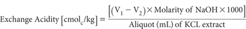
Report exchange acidity (cmolc/kg), expressed on an oven-dry basis. Use the air-dry moisture to oven-dry moisture ratio to convert to an oven-dry concentration. Refer to Method 2A1 for guidance with regard to this soil moisture calculation
Exchangeable Al3+ and Exchangeable H+
Proceed as for the exchange acidity titration. After titration to pH 8.0, add 5 mL of 4% NaF solution. If Al3+ is present, the pH will increase due to the formation of NaOH as shown by the next equation:
Al(OH)3 + 6NaF → Na3 AlF6 + 3NaOH
Allow to stand with gentle stirring for about 5 min, maintaining an atmosphere of N2 above the solution. Titrate with 0.02 M HCl to pH 8.0. Record titre (V3 mL).
Titrate the blank from exchange acidity titration after adding 5 mL of NaF solution (as above) and record titre (V4 mL); the blank should be positive but small.
Aluminium is regarded as being trivalent as indicated by the following equation:
Al3 + 3NaOH → Al(OH)3 + 3Na+
Calculation and Reporting of Exchangeable Al3+
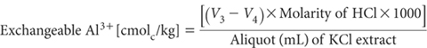
Report exchangeable Al3+ (cmolc/kg), expressed on an oven-dry basis. Use the air-dry moisture to oven-dry moisture ratio to convert to an oven-dry concentration. Refer to Method 2A1 for guidance with regard to this soil moisture calculation.
Calculation and Reporting of Exchangeable H+
Exchangeable H+ [cmolc/kg] = [Exchangeacidity – Exchangeable Al3+]
Report exchangeable H+ (cmolc/kg), expressed on an oven-dry basis. Use the air-dry moisture to oven-dry moisture ratio to convert to an oven-dry concentration. Refer to Method 2A1 for guidance with regard to this soil moisture calculation
This test contributes to one of the characterising analytical methods in Soil Taxonomy (Soil Survey Staff, 1975). The property refers to acidity associated with release of Al3+ and displaced H+ at pH 8.2 and its neutralisation with TEA. Excess TEA is measured with standard acid. When added to exchangeable bases, exchange acidity provides an estimate of CEC at pH 8.2, which reflects maximum net negative charge of the soil.
The method described involves overnight shaking, clarification, and titration of an aliquot of the equilibrated buffer solution (Blakemore et al. 1987).
TEA Buffer Solution To 61.07 g barium chloride (BaCl2.2H2O) add 28 mL triethanolamine [N(CH2CH2OH)3] and make to 1 L with CO2-free deionised water. Adjust solution pH to 8.2 with ≈10 mL 5 M HCl. Protect the solution by attaching a drying tube containing a CO2 adsorbent (e.g. soda-lime) to the air intake.
0.10 M Hydrochloric Acid
Use a commercial standard solution or prepare by adding 10 mL 10 M HCl to deionised water and make volume to 1.0 L. Standardise against sodium tetraborate as in Method 7A1.
0.1% Bromocresol Green
Dissolve 0.1 g bromocresol green (C21H14Br4O5S) in 100 mL CO2-free deionised water.
Mixed Indicator
Dissolve 1.250 g methyl red (C15H15N3O2) and 0.825 g methylene blue (C16H18ClN3S) separately in a small quantity of 96% ethanol (C2H5OH). When dissolved, combine and make to 1 L with 96% ethanol.
Generally, weigh 2.5 g of air-dry soil (<2 mm) into a 50 mL, screw-cap, polypropylene centrifuge tube; weigh 1.0 g for soils high in OM and/or in short-range-order minerals. Add 25 mL of buffer solution and shake for 16 h on an end-over-end shaker. Centrifuge at 2000 rpm for 15 min. Concurrently, shake two blanks of 25 mL of buffer solution.
Transfer 10 mL aliquots of supernatant solution to 125 mL conical flask, add about 20 mL deionised water and mix. Add 1 drop Bromocresol Green and 5 drops Mixed Indicator. Titrate with 0.10 M HCl until solution reaches first full purple colour. Titrate blank solutions first then titrate sample solutions to the same point of colour change.
For 2.5 g soil, 25 mL buffer solution and 0.10 M HCl:
TEA Exchange Acidity (cmolc/kg) = {[Blank titre – Sample titre (in mL)] × 10}
For 1.0 g soil, 25 mL buffer solution and 0.10 M HCl:
TEA Exchange Acidity (cmolc/kg) = {[Blank titre – Sample titre (in mL)] × 25}
Report TEA Exchange Acidity (cmolc/kg), expressed on an oven-dry basis. Use the air-dry moisture to oven-dry moisture ratio to convert to an oven-dry concentration. Refer to Method 2A1 for guidance with regard to this soil moisture calculation.
This method is one alternative for the direct measurement of CEC. The described procedure follows removal of exchangeable bases by 1 M NH4OAc at pH 7 and subsequent replacement of exchanged NH4+ with 1 M NaCl (Methods 15D1 and 15D2). In addition, it is suitable for methods in which exchangeable NH4+ are displaced with a mixed KNO3-Ca(NO3)2 solution (Methods 15B1 and 15C1), provided corrections are made for excess NH4Cl remaining in the soil after removal of exchangeable bases, and for a different ratio of soil/final solution.
60% Sodium Hydroxide
As for Method 7A1.
2% Boric Acid Solution
As for Method 7A1.
Bromocresol Green-Methyl Red Mixed Indicator
As for Method 7A1.
0.010 M Hydrochloric Acid
As for Method 7A1.
Sand/Reagent Blank Solution
This should be identical to the displacement solution used on the samples being analysed.
In Method 15D1 and 15D2 the exchange complex of the soil was saturated with NH4+, then extracted by 1 M NaCl. The NaCl extracts were retained for determination of CEC.
Transfer a 20 mL aliquot of the 1 M NaCl leachate to a suitable NH3 distillation apparatus. Add 5 mL of 60% NaOH and distil the NH3 into 10 mL of 2% H3BO3 as described in Method 7A1. Titrate with 0.01 M HCl using Bromocresol Green-Methyl Red Indicator. Analyse the sand/reagent blank solution concurrently with the samples.
For 0.01 M HCl, a 5.0 g sample and a 20 mL aliquot from the 250 mL collected:
CEC (cmolc/kg = {[Sample titre – blank titre(mL)] × 2.5
Make an appropriate adjustment if HCl is not 0.010 M.
Report CEC (cmolc/kg), expressed on an oven-dry basis. Use the air-dry moisture to oven-dry moisture ratio to convert to an oven-dry concentration. Refer to Method 2A1 for guidance with regard to this soil moisture calculation.
This is an alternative to Method 15I1 when the laboratory has suitable autoanalysis equipment. The method is based on that described by Blakemore et al. (1987). It involves the automated colorimetric determination of NH4+ in the 1 M NaCl leachates from Methods 15D1 and 15D2.
Dichloro-S-triazine Solution
As for Method 7A2.
Sodium Nitroprusside Solution
As for Method 7A2.
Sodium Salicylate Solution
As for Method 7A2.
Citrate-Tartrate Reagent
As for Method 7A2.
Wash Solution
Combine 1 part 60% Aqueous Ethanol (Method 15A2) with 24 parts of 1 M NaCl Displacement Solution (Method 15D1) and mix well. Reagents should be from the same batches used during the extraction process.
Auto CEC Ammonium Primary Standard
1 L contains 200 mmolc of NH4-N.
Dissolve 16.009 g ammonium nitrate (NH4NO3; previously dried at 100°C for 1 h) in wash solution and make volume to 1 L in a volumetric flask.
Auto CEC Ammonium Working Standards
Dispense 2.5, 5.0, 7.5, 10.0, 15.0 and 20.0 mL Auto CEC Ammonium-N Primary Standard into 500 mL volumetric flasks and bring to volume with Wash Solution. These solutions contain 1.0, 2.0, 3.0, 4.0, 6.0 and 8.0 mmolcNH4-N/L. For 5.0 g soil made to 250 mL, direct soil strengths (CEC) of standards are 5.0, 10.0, 15.0, 20, 30 and 40 cmolc/kg.
In Method 15D1 and 15D2 the exchange complex of the soil was saturated with NH4+ that was then extracted by 1 M NaCl. The NaCl extracts were retained for determination of CEC.
Transfer an aliquot of each NaCl leachate into a sample tube and load the sampler. Avoid contact of these solutions with NH3 fumes.
Set up the autoanalysis apparatus using the manifold and the procedure described in Method 7A2. The heating bath is essential as variations in temperature can affect the sensitivity of the analysis.
Prior to commencement of every run, circulate reagents and wash the solution for at least 20 min, ‘condition’ the manifold and check instrument settings by pumping the highest working standard required for several minutes. Run standards and unknowns at a constant rate (usually 60/h) with a 5:1 sample/wash ratio. Samples containing >8 mmolc/L should be diluted with wash solution as necessary.
Determine the concentration of NH4-N by comparison with calibration curves (or from a regression equation) prepared from standard solutions run on commencement, after at least every 30 soil leachates, and upon completion.
CEC (cmolc/kg = [NH4-N measured – NH4-N blank]
Report CEC (cmolc/kg), expressed on an oven-dry basis. Use the air-dry moisture to oven-dry moisture ratio to convert to an oven-dry concentration. Refer to Method 2A1 for guidance with regard to this soil moisture calculation.
This method represents the final step in the analysis of soil CEC by Methods 15B1, 15B2, 15B3 and 15C1. Ammonium ions displaced from exchange sites, together with NH4+ and Cl– derived from any NH4Cl solution residual in the extract, are measured simultaneously.
Ammonium is determined by an automated colorimetric procedure based principally on the methods of Henzell et al. (1968) and McLeod and Zarcinas (1976). The method employs the ammonium-phenate-hypochlorite reaction reviewed by Gehrke et al. (1968) and Searle (1984). In laboratories ill-equipped to handle phenol, the analytical finish for NH4+ used in Method 15I2 can be substituted. Chloride is determined colorimetrically, based on the reaction of Cl– with ferric nitrate and mercuric thiocyanate (McLeod and Zarcinas 1976).
Method 7A2a, Gordon et al. (1993) and Section 4120 of APHA (2005) provide more details on SFA. One of the SFA technologies herein outlined is an example based on AutoAnalyzer I technology (Figure 15.8); the second utilises micro-bore technology (Figure 15.9). It is recognised, however, that improvements in system performance are ongoing, and incorporate a better understanding of the way in which dispersion, tubing diameter and flow rate are interrelated (Gordon et al. 1993). The analyst must be guided by the operational instructions and directions given by the manufacturer of their SFA equipment. This could require changes to the specified reagents and to the flow diagrams provided for this method.
Brij 35 Wetting Agent
As for Method 5A2a.
Figure 15.8. A continuous flow manifold (Auto Analyzer I technology) for CEC (NH4+ and Cl–).
Diluting Water (Water Diluent)
Deionised water containing 0.2 mL/L Brij Wetting Agent.
0.1 M Nitric Acid
Calcium-Potassium Nitrate-Nitric Wash Solution
Dissolve 150 g potassium nitrate (KNO3) and 60 g calcium nitrate [Ca(NO3)2.4H2O] in deionised water and make to 1 L. Take 600 mL of this solution and add 400 mL of 0.1 M HNO3 and make to 1 L. Chemicals for these solutions should be from the same batches used to prepare extracting solutions of Methods 15B1, 15B2, 15B3 or 15C1.
0.0162 M EDTA (disodium salt)
Dissolve 6.2 g disodium EDTA (C10H24N2Na2O8.2H2O) in deionised water and make volume to 1 L. Add 0.2 mL Brij 35 wetting agent.
Sodium Phenate Solution
Dissolve 11.25 g sodium hydroxide (NaOH) in approximately 250 mL deionised water and add, while hot, to 25 g phenol (C6H5OH; unstabilised). Cool and make to 1 L with deionised water.
Combined EDTA-Sodium Phenate Working Reagent
As required, combine 2 parts of 0.0162 M EDTA Solution with 1 part of Sodium Phenate Solution, mix well and filter if necessary.
2.5 M Sodium Hydroxide
Dissolve 100 g sodium hydroxide (NaOH) and make to 1 L with deionised water.
Alkaline Hypochlorite Solution
Mix equal volumes of sodium hypochlorite (NaOCl; ≈9–10% w/v free Cl2) and 2.5 M NaOH Solution. Prepare as required and filter immediately after preparation.
Saturation Mercuric Thiocyanate Solution
Prepare a saturated solution by shaking or stirring overnight about 0.75 g mercuric thiocyanate [Hg(CNS)2] with 1 L deionised water. Filter through a Whatman No. 44 paper. The solution is stable for a long period.
Ferric Nitrate Solution
Dissolve 20.2 g ferric nitrate [Fe(NO3)3.9H2O] in deionised water, add sufficient 14 M HNO3 until the solution becomes almost colourless (≈8 mL required), and dilute to 1 L with deionised water. Provided sufficient HNO3 has been added to prevent darkening, the solution should remain stable for a long period.
Chloride Colour Reagent
As required, mix equal volumes of saturated Hg(CNS)2 and Fe(NO3)3 Solutions and add 0.20 mL Brij 35 Wetting Agent to each litre.
As for Method 5A2a for Cl– part of the flow chart, and as for the NH4-N component of Method 7C2a, except that Reagent Water substitutes for the NaCl/H2SO4 Reagent. Use Ca-KNO-HNO3 Wash Solution described for Figure 15.8 Reagents for the probe rinse.
Figure 15.9. A micro-bore continuous flow manifold for CEC (NH4+ and Cl–).
Table 15.17. Examples of dÕutŠns and concentratŠns for NH4-N and Cl– Working Standards – CEC measurement.
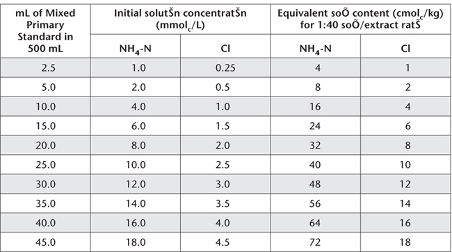
Standard for Automated Determination of NH4+ and Cl–
Mixed Ammonium and Chloride Primary Standard
1 L contains 200 mmolcNH4-N and 50 mmolcCl–.
Dissolve 16.009 g ammonium nitrate (NH4NO3, previously dried at 100°C for 1 h) and 2.922 g sodium chloride (NaCl, previously dried at 105°C for 4 h), in Ca-KNO3-HNO3 Wash Solution, then make volume to 1 L with the same solution. Store in the dark in a plastic bottle.
Combined Ammonium and Chloride Working Standards
Dispense Mixed NH4 and Cl Primary Standard, as indicated in Table 15.17 into 500 mL volumetric flasks. Make to volume with Ca-KNO3-HNO3 Wash Solution from the same batch of reagents used for soil extraction.
Always avoid contact with fumes of NH3/NH4 and Cl2 in order to minimise analytical errors. Air used during continuous flow analysis of NH4-N and Cl– should be passed through dilute H2SO4 and AgNO3 solutions, respectively, to prevent possible contamination, particularly if room air quality cannot be guaranteed.
Ensure individual components of the CEC manifold for NH4-N and Cl– are connected as detailed in Figure 15.8 or Figure 15.9 (or as recommended by the manufacturer) and that Working Standards and soil CEC extracts are at room temperature before analysis. Prior to commencement of each batch, circulate reagents and Ca-KNO3-HNO3 wash solution for at least 20 min to ‘condition’ the system. Check instrument settings by pumping the highest working standard required for several minutes.
Determine concentration of NH4-N and Cl– in the soil extracts directly from regression equations or calibration curves derived from Working Standards (Table 15.17) run on commencement, after about every 30 CEC extracts, and on completion. A reagent blank should also be measured and adjustments made as necessary.
When shutting down the system, immediately transfer the pump tubes from the Ca-KNO3-HNO3 wash solution and the alkaline hypochlorite solution over to water wash. When these lines have been flushed of reagents, transfer all other pump tubes to water wash and continue pumping for at least 10 min.
As the soils are leached with 60% Aqueous Ethanol to remove most residual NH4Cl before NH4 ions are displaced, no correction for any free NH3 in the entrained NH4Cl Extracting Solution is required.
CEC[cmolc/kg] = [(NH4-Nmeasured – NH4-Nblank) – (Cl– measured – Cl– blank (all expressedascmol/kg)
Report CEC (cmolc/kg), expressed on an oven-dry basis. Use the air-dry moisture to oven-dry moisture ratio to convert to an oven-dry concentration. Refer to Method 2A1 for guidance with regard to this soil moisture calculation.
When segmented flow or distillation equipment is unavailable, a titration finish can be used for the estimation of NH4+ and Cl–, when determining CEC by Methods 15B1, 15B2, 15B3 and 15C1 in particular. Procedures are based on the formol titration of NH4+ and the Ag/AgCl reaction for Cl– (Tucker and Beatty 1974b). Modifications to the formol titration for CEC by NH4OAc at pH 7 (Methods 15D1 and 15D2) are given in Note 3.
Formol Reagent
Mix 500 mL deionised water with 500 mL of filtered (if necessary) 35% formalin – commercial formaldehyde (CH2O2) in water-methanol (CH3OH) mixture – and adjust to pH 8.2 with NaOH. Store in the dark in a stoppered bottle; periodically check and adjust pH, which may fall on long storage.
Aqueous Acetone
Mix one part of acetone (C3H6O; commercial) with two parts deionised water. The acetone is employed to sharpen the pH inflection corresponding to the end point of the formol titration. Consequently, it should not contain any free acid.
Sodium Hydroxide Solution (NaOH)
Concentration may be varied to suit equipment and the nature of samples. For an auto-titrator with a 2.5 mL burette, a strength around 0.05 M NaOH is suitable. For a 10 mL manual burette, preferred strength is about 0.025 M NaOH. A concentration up to 0.2 M NaOH may be required for a micro-burette. Prepare from 45% NaOH solution and standardise (Method 4D1).
Silver Nitrate Solution (AgNO3)
Concentration required will vary with equipment and nature of samples. For an auto-titrator with 2.5 mL burette, use 0.1 M AgNO3, prepared by dissolving 16.99 g AgNO3 and diluting to 1 L with deionised water. For a 10 mL manual burette, use 0.02 M AgNO3, prepared by dissolving 3.40 g AgNO3 and diluting to 1 L with deionised water. Standardise against standard NH4Cl – see procedure for Cl– (this method).
0.1 M Ammonium Chloride Standard
1 L contains 1.4 g NH4-N and 3.545 g Cl– ≡ 100 mmolc of both NH4-N and Cl–.
Dissolve 5.3491 g pure, dry ammonium chloride (NH4Cl) and make to 1 L in a volumetric flask with boiled (CO2 free) deionised water. Confirm NH4-N concentration by Method 7A1 or 7A2.
0.02 M Ammonium Chloride Standard
1 L contains 20 mmolc of both NH4-N and Cl–.
Dilute 100 mL 0.1 M NH4Cl standard with CO2-free deionised water and make to 500 mL in a volumetric flask.
Calcium-Potassium Nitrate-Nitric Acid Solution
Prepare as for Method 15I3.
Chloride Titration Medium
Sprinkle 0.3 g sodium carboxymethylcellulose (7.0–7.5% Na) over the surface of 30 mL of deionised water and gently boil to dissolve. Add this solution to 1.0 L deionised water, mix and add 0.5 mL HNO3. The function of this reagent, particularly the carboxymethylcellulose, is to improve the indicating electrode response time by keeping the AgCl precipitate as a colloid. (Polyvinyl alcohol can also be used). Add one crystal of thymol to prevent mould growth.
Prepare apparatus as described for Method 5A1 except that (unless otherwise recommended by the manufacturer) a mixture of one part of Ca-KNO3-HNO3 solution and two parts of Cl– Titration Medium should be substituted for saturated KNO3 in the outer compartment of the double-junction calomel reference electrode (Note 1).
Next standardise the AgNO3 solution (usually 0.1 M or 0.02 M) against 0.1 M NH4Cl standard. (If exactly 0.1 M AgNO3, 1 mL is equivalent to 3.545 mg of Cl–.) Dilute with 10 mL Cl– Titration Medium and, if required, add deionised water.
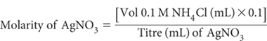
Make appropriate adjustments if NH4Cl differs from 0.1 M.
Determine Cl– concentration in leachates held for CEC determination by taking a suitable aliquot (5 to 10 mL). Dilute with 10 mL of Cl– Titration Medium (plus deionised water if required) and titrate with AgNO3 (standardised). End point corresponds to approximately 267 mV. Subsequent titrations with unknowns should be terminated at the end-point voltage, and the volume of AgNO3 recorded (mL). A blank determination of the Ca-KNO3-HNO3 solution plus Cl– Titration Medium should also be made with each batch.
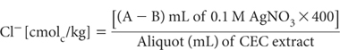
where A = titre of AgNO3 for sample; and B = titre of AgNO3 for blank.
Make appropriate adjustments to this calculation should molarity of AgNO3 vary from 0.1 M. For example, if 0.02 M AgNO3, the factor is 80 instead of 400.
Procedure for Ammonium (Formol Titration; Notes 2, 3 and 4)
Transfer an accurate aliquot of leachate (5 to 10 mL) into a titration vessel and, while stirring, add 8 mL Formol Reagent and 50 mL Aqueous Acetone. Insert pH electrodes and temperature compensator and note pH when steady; the pH should be more acidic than pH 5. Titrate with standardised NaOH (in the absence of CO2 – flow N2 if available) to pH 5.0. Note burette reading (V1; mL) then continue titrating to pH 8.2 (V2; mL). Record volume of standard NaOH (V2 – V1; mL) used.
Run a method blank in a similar way, using an identical aliquot of Ca-KNO3-HNO3 leaching solution and note volume (mL) of standard NaOH for titration between pH 5.0 and 8.2 (V3; mL). This method blank may have a small positive value. Upon completion of this titration, add a known volume (5–10 mL) of 0.02 M NH4Cl to the titrated liquid and re-titrate to confirm the standardisation of the NaOH titrant and the optimum end point.
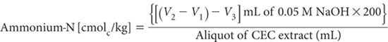
where
V1, V2 and V3 are as earlier defined.
Make appropriate adjustments to this calculation should molarity of NaOH vary from 0.05 M.
The CEC corresponds to the difference between the NH4-N and Cl– concentrations in the same sample, both expressed as cmolc/kg; i.e.
CEC[cmolc/kg] = NH4-N Cl–
Should for any reason the soil/final CEC leachate ratio not be 1:40, this must be factored into the before-mentioned calculations.
Report CEC (cmolc/kg), expressed on an oven-dry basis. Use the air-dry moisture to oven-dry moisture ratio to convert to an oven-dry concentration. Refer to Method 2A1 for guidance with regard to this soil moisture calculation.
1. A double junction electrode prevents leakage of the KCl electrolyte from the inner compartment into the titration medium. The secondary salt bridge will eventually be contaminated by KCl and its intended function as a secondary salt-bridge corrupted. Avoid by frequent replacement of electrolyte in the outer compartment of the double-junction electrode. Alternatively, use a mercury/mercurous sulfate electrode as indicated in Method 5A1.
2. To ensure the formol titration is quantitative, a large excess of formaldehyde is required. Moreover, to avoid any possibility of solution alkalinity caused by reaction of the displacing solution with soil, the Ca(NO3)2 + KNO3 solution is collected into dilute HNO3. The titre between pH 5.0 and 8.2 corresponds to the total NH4 + NH3, when corrected by the blank titre of an aliquot of Ca(NO3)2 – KNO3 – HNO3 solution.
3. If using the formol titration for CEC by ammonium acetate at pH 7, precautions against alkalinity of the NaCl solution should be taken. Usually 1 to 2 mL of 0.01 M acid addition should reduce pH of the aliquot to <5.0. Otherwise proceed in a similar way to that described for Methods 15B1, 15B2, 15B3 and 15C1 except that the reagent blank is 1 M NaCl and CEC calculation is as follows:
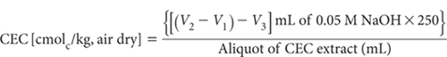
4 Free NH3 is present in NH4Cl solutions used for displacing exchangeable cations. It is highest in Method 15C1 where the NH3/NH4 ratio approximates to 1:8. In such cases the true NH4-N concentration can be calculated by:
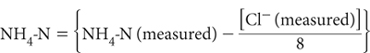
For Methods 15B1, 15B2 and 15B3, and for most soils analysed by Method 15C1, this correction is unnecessary as it is less than the error of the determination. It may be warranted for precise studies involving Method 15C1 on soils that retain large volumes of Extracting Solution, such as strongly swelling clays and highly organic soils.
Effective CEC is the sum of the exchangeable bases (Ca2+, Mg2+, Na+, K+; method is optional) plus exchange acidity (Al3+ plus H+; from 1 M KCl – Method 15G1), all expressed as cmolc/kg on an oven-dry basis (e.g. Baker 1984). Other definitions for ECEC are also used (e.g. Coleman and Thomas 1967, Kamprath 1970, Blakemore et al. 1987).
The method is relatively simple to perform and usually provides a reliable guide to the actual CEC of neutral and acidic soils, even when these are dominated by variable-charge colloids; however, positive errors from soluble bases – including those introduced as fertilisers and amendments – can occur, if these are included in the estimate of exchangeable bases selected for use.
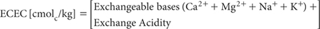
Report ECEC (cmolc/kg), expressed on an oven-dry basis, noting the code for the method used for exchangeable bases.
1. All components in this calculation should be expressed in the same units (cmolc/kg) and on the same soil moisture status. It is suggested that the air-dry to oven-dry moisture correction be made in advance. Refer to Method 2A1 for guidance with regard to soil moisture calculations.
A base-saturated soil in equilibrium with excess CaCO3, and with a CO2 partial pressure equal to that of the atmosphere has a pH around 8.2. Soil CEC also reaches a point of relative constancy at this pH (Mehlich 1942).
This estimate of CECpH8.2 is not measured; it is calculated from the sum of exchangeable bases (Ca2+, Mg2+, Na+, K+; method is optional) plus exchange acidity by triethanolamine (Method 15H1), all expressed as cmolc/kg on an oven-dry basis. As with ECEC by 15J1, it is prone to positive errors if soluble bases are included in the estimate/measurement of exchangeable bases. Base saturation of CEC at pH 8.2 is used as one of the criteria in Soil Taxonomy (Soil Survey Staff 1975) for separating Alfisols and Ultisols.
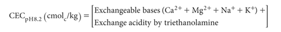
Report CECpH8.2 [cmolc/kg], expressed on an oven-dry basis, noting the code for the method used for exchangeable bases.
Base saturation percentage is calculated from the sum of exchangeable bases (Ca2+ + Mg2+ + Na+ + K+; method is optional) and soil CEC (method is optional), each of these expressed as cmolc/kg on an oven-dry basis. Accordingly, base saturation is the portion of soil CEC accounted for by exchangeable bases.
Base saturation is commonly used as an indicator of soil fertility but does not reflect imbalances in relative proportions of individual exchangeable bases. Generally, BSP values of <20, 20–60, and >60 are rated as low, medium and high, respectively (Landon 1984).
In addition to that mentioned in Method 15K1, BSP values are used as indicators of fertility status in the FAO-UNESCO (1974) soil classification.
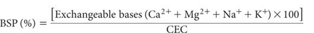
all expressed as cmolc/kg on an oven-dry basis.
Report BSP (%) on an oven-dry basis, noting the codes used for the exchangeable bases and CEC methods.
The concentration of an individual exchangeable base relative to another exchangeable base may affect plant nutrient availability and uptake. Ion antagonisms are thought to be accentuated when wide differences in concentrations occur in the same soil, such as between Mg2+ and K+ or Ca2+ and Mg2+. For example, it has been suggested that Mg deficiency is more likely when the Ca/Mg ratio exceeds 4–6 and/or when the Mg/K ratio drops below 2.0–2.5 (Metson 1974; Rayment 1983).
Kopittke and Menzies (2007) have reviewed literature on basic cation saturation ratios and concluded the data do not support claims of an ‘ideal’ mineral balancing ratio of approximately 65% Ca, 10% Mg, and 5% K. Nevertheless, many soil testing services base their recommendations on the need for basic cations on the ‘ideal’, rather than on the ‘sufficiency level concept’ that typically is more conservative on nutrient inputs.
The method provides a general description for the calculation of cation ratios, which include Ca2+/Mg2+, Mg2+/K+, Na+/K+, etc. The convention is that all ratios involving the exchangeable bases should be calculated on a chemically equivalent basis, involve the same soil extraction procedure, all expressed on the same soil moisture status.
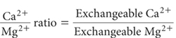
where both exchangeable Ca2+ and Mg2+ are from the same method and expressed as cmolc/kg soil on the same soil moisture basis.
Calculate other cation ratios in a similar manner.
Report the specified cation ratio, noting the method used for exchangeable bases.
High levels of soil Na+ can adversely affect plant growth and lead to the development of poor soil physical conditions (e.g. Shaw et al. 1987).
A measure of soil sodicity, or the amount of exchangeable Na+ on the soil’s cation exchange complex, can be expressed numerically in terms of its exchangeable Na+ percentage (ESP). This is defined as 100 times exchangeable Na+ (method is optional) in proportion to the soil’s CEC (extension of same method used for exchangeable Na+), expressed as cmolc/kg on an oven-dry basis. The estimate will suffer positive errors if water-soluble Na+ is included in the value used for exchangeable Na+.
Northcote and Skene (1972) have categorised ESP in terms of soil sodicity as follows:
ESP <6 non-sodic
ESP 6–15 sodic
ESP >15 strongly sodic
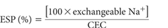
where both exchangeable Na+ and CEC are from the same method and expressed as cmolc/kg soil on an oven-dry basis.
Report ESP (%), noting codes for exchangeable Na+ and CEC methods used.
Aluminium saturation of the soil ECEC has been used with variable success to indicate when Al toxicity could prejudice plant growth. Bruce et al. (1988) and Bruce et al. (1989) found that plant roots could tolerate high Al saturations at low soil solution ionic strengths. Conversely, Al toxicity can exist at relatively low levels of Al saturation when soil ionic strength is elevated following additions of soluble inorganic fertilisers. Accordingly, values for percent Al saturation must be interpreted with care.
This calculation is based on exchangeable Al3+ from Method 15G1 and ECEC from Method 15J1, both expressed as cmolc/kg.
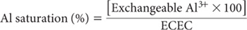
where both exchangeable Al and ECEC are expressed as cmolc/kg on an oven-dry basis. Report Al saturation (%), calculated on an oven-dry basis.
Anon (1983) Determination of potassium, calcium, magnesium, and sodium by neutral normal ammonium acetate extraction. In Reference Soil Test Methods for the Southern Region of the United States. pp. 30–34. The University of Georgia, College of Agriculture Experiment Stations, September 1983.
APHA (2005) Section 4120. In Standard Methods for the Examination of Water and Wastewater, 21st Edn. (Eds AD Eaton, LS Clesceri EW Rice and AE Greenberg) American Public Health Association, American Water Works Association, and Water Environment Federation, Maryland, USA.
Baker DE (1984) Laboratory methods for exchangeable cations and CEC on acidic soils. Proceedings of National Soils Conference, Brisbane 1984. p. 327. Australian Society of Soil Science Inc., Australia.
Bieske G (1968) Soil and plant analysis with reference to potassium nutrition of sugar cane. In Potassium in Northeastern Australian Agriculture. A Workshop Sponsored by the Australian Potash Research Institute, Brisbane, October 1968. pp. 60–67.
Black CA (Ed) (1965) Methods of Soil Analysis. Part 2. Agronomy No. 9. American Society of Agronomy Inc., Madison, Wisconsin, USA.
Black AS and Waring SA (1979) Adsorption of nitrate, chloride and sulfate by some highly weathered soils from south-east Queensland. Australian Journal of Soil Research 17, 271–282.
Blakemore LC, Searle PL and Daly BK (1987) Methods for chemical analysis of soils. NZ Department of Science and Industrial Research, Soil Bureau Scientific Report 80.
Bruce RC, Bell LC, Edwards DG and Warrell LA (1989) Chemical attributes of some Queensland acid soils. II. Relationships between soil and soil solution phase compositions. Australian Journal of Soil Research 27, 353–364.
Bruce RC, Warrell LA, Edwards DG and Bell LC (1988) Effects of aluminium and calcium in the soil solution of acid soils on root elongation of Glycine max cv Forrest. Australian Journal of Agricultural Research 39, 319–338.
Chhabra R, Pleysier J and Cremers A (1975) The measurement of the cation exchange capacity and exchangeable cations in soils: a new method. Proceedings of the International Clay Conference. pp. 439–449. Applied Publishing Ltd., Illinois, USA.
Coleman NT and Thomas GW (1967) The basic chemistry of soil acidity. In Soil Acidity and Liming. Agronomy Monograph Series No. 12. pp. 1–41. American Society of Agronomy Inc., Wisconsin, USA.
Etchevers, JD (1986) Chemical soil analysis – the reason for their drawbacks. In Proceedings of an International Workshop on the Laboratory Methods and Data Exchange Programme. (Ed LK Pleijsier) pp. 16–34. Technical Paper, International Soil Reference and Information Centre, Labex Secretariat, The Netherlands.
FAO-UNESCO (1974) Soil maps of the world, 1:5,000,000, Vol 1. Legend – Dudal et al. (UNESCO, Paris).
Gehrke CW, Kaiser FE and Ussary JP (1968) Automated spectrophotometric method for nitrogen in fertilisers. Journal of the Association of Official Analytical Chemists 51, 200–211.
Gillman GP (1979) A proposed method for the measurement of exchange properties of highly weathered soils. Australian Journal of Soil Research 17, 129–139.
Gillman GP and Abel DJ (1987) A summary of surface charge characteristics of the major soils of the Tully – Innisfail Area, north Queensland. CSIRO Division of Soils Divisional Report No. 85, CSIRO, Melbourne.
Gillman GP and Bakker P (1979) The compulsive exchange method for measuring surface charge characteristics of soil. CSIRO Division of Soils Divisional Report No. 40.
Gillman GP, Skjemstad JO and Bruce RC (1982) A comparison of methods used in Queensland for determining cation exchange properties. CSIRO Australia, Division of Soils Technical Paper No. 44.
Gillman GP and Sumpter EA (1986) Modification to the compulsive exchange method for measuring exchange characteristics of soils. Australian Journal of Soil Research 24, 61–66.
Gordon LI, Jennings JC Jr, Ross AA and Krest JM (1993) A suggested protocol for continuous flow automated analysis of seawater nutrients (phosphate, nitrate, nitrite and silicic acid) in the WOCE Hydrographic Program and the Joint Global Ocean Fluxes Study. WOCE Hydrographic Program Office, Methods Manual WHPO 91–1. College of Oceanic and Atmospheric Sciences, Oregon State University, Oceanography Administration Building, Corvallis, Oregon.
Henzell EF, Vallis I and Lindquist JE (1968) Automatic colorimetric methods for the determination of nitrogen in digests and extracts of soils. Transactions 9th International Congress of Soil Science, Adelaide, Australia 3, 513–520.
Hewitt EJ (1965) Sand and Water Culture Methods Used in the Study of Plant Nutrition. Technical Communication No. 22, 2nd Edn, Commonwealth Agricultural Bureaux, England.
Hislop JE and Hornbeck JW (2002) Coping with effects of high dissolved salt samples on the inductively coupled plasma spectrometer. Communications in Soil Science and Plant Analysis 33, 3377–3388.
Hun IE (1971) Variacion estacional de nutrients en un suelo con pradera natural y establecida, Universidad de Concepción. Fac. de Agron. Chillán, Chile (Mimeographed Thesis).
Janik LJ, Merry RH and Skjemstad JO (1998) Can mid infrared diffuse reflectance analysis replace soil extractions. Australian Journal of Experimental Agriculture 38, 681–696.
Janik LJ and Skjemstad JO (1995) Characterization and analysis of soils using mid-infrared partial least-squares. II Correlations with some laboratory data. Australian Journal of Soil Research 33, 637–650.
Kamprath EJ (1970) Exchangeable aluminium as a criterion for liming leached mineral soils. Soil Science Society of America Proceedings 34, 252–254.
Kopittke PM and Menzies NW (2007) A review of the use of the basic cation saturation ratio and the ‘ideal’ soil. Soil Science Society of America Journal 71, 259–265.
Landon JR (Ed) (1984) Soil Chemistry. In Booker Tropical Soil Manual. pp. 106–156. Longman Inc., New York.
Loveday J (Ed) (1974) Methods for Analysis of Irrigated Soils. Commonwealth Agricultural Bureaux, Technical Communication No. 54.
Loveday J, Beatty HJ and Norris JM (1972) Comparison of current chemical methods for evaluating irrigation soils. CSIRO Australia, Division of Soils Technical Paper No. 14.
Little IP (1989) The use of a copper thiourea reagent for the determination of exchangeable basic cations in soils. Australian Journal of Soil Research 27, 117–122.
MacPhee WSG and Ball DF (1967) Routine determination of calcium and magnesium in soil extracts by atomic absorption spectrophotometry. Journal of the Science of Food and Agriculture 18, 376–380.
McLeod S and Zarcinas B (1976) The determination of ammonium and chloride by an auto-analyser for the measurement of cation exchange capacity of soils. Communications in Soil Science and Plant Analysis 7, 743–750.
Mehlich A (1942) Rapid estimation of base exchange properties of soil. Soil Science 53, 1–14.
Metson AJ (1974) Magnesium in New Zealand soils. 1. Some factors governing the availability of soil magnesium: a review. New Zealand Journal of Experimental Agriculture 2, 277–319.
Northcote KH and Skene JKM (1972) Australian soils with saline and sodic properties. CSIRO Division of Soils Technical Publication No. 27.
Parfitt RL (1980) Chemical properties of variable charge soils. In Soils with Variable Charge. (Ed. BKG Theng). pp.167–194. NZ Society of Soil Science, Lower Hutt.
Peverill K and Johnstone P (1997) National Soil Quality Assurance Program Report 1997. Australasian Soil and Plant Analysis Council Inc., c/- State Chemistry Laboratory, Victoria.
Pierce CG and Morris S (2004) Comparison of extraction techniques for measuring exchangeable cations in calcareous soils. Australian Journal of Soil Research 42, 301–311.
Pleysier JL and Juo ASR (1980) A single-extraction method using silver-thiourea for measuring exchangeable cations and effective CEC in soils with variable charges. Soil Science 129, 205–211.
Rayment GE (1983) Interpretation of soil and plant analytical data for temperate pastures in South-east Queensland. Queensland Department of Primary Industries Bulletin QB 83006.
Rayment GE, Kuhn G and Pulsford JS (1996) Fertiliser options and improved nutrient management practices. In Downstream Effects of Land Use. (Eds HM Hunter, AG Eyles and GE Rayment) pp. 227–233. Department of Natural Resources, Brisbane, Queensland.
Rayment GE, Peverill KI, Hill RJ, Daly BK, Ingram C and Marsh J (2007) ASPAC Plant Proficiency Testing Program Report 2004–05. Australasian Soil and Plant Analysis Council Inc., Melbourne.
Rhoades JD (1982) Cation exchange capacity. In Methods of Soil Analysis. Part 2 – Chemical and Microbiological Properties, 2nd Edn. (Ed AL Page) pp. 149–157. Agronomy No. 9. American Society of Agronomy Inc. and Soil Science Society of America Inc., Madison, Wisconsin, USA.
Sanchez PA (1976) Properties and Management of Soils in the Tropics. John Wiley & Sons, New York.
Schollenberger CJ and Simon RH (1945) Determination of exchange capacity and exchangeable bases in soil-ammonium acetate method. Soil Science 59, 13–24.
Searle PL (1984) The Berthelot or indophenol reaction and its use in the analytical chemistry of nitrogen. A review. Analyst 109, 549–568.
Searle PL (1986) The measurement of soil cation exchange properties using the single extraction, silver thiourea method: an evaluation using a range of New Zealand soils. Australian Journal of Soil Research 24, 193–200.
Searle PL and Lee R (1984) Ionic strength considerations and the use of silver-thiourea in the determination of cation exchange capacity. NZ Soil News 32, 195.
Shaw RJ, Hughes KK, Thorburn PJ and Dowling AJ (1987) Principles of landscape, soil and water salinity – processes and management options, Part A. In Landscape, Soil and Water Salinity, Proceedings of the Brisbane Regional Salinity Workshop, Brisbane, May 1987. Queensland Department of Primary Industries Conference and Workshop Series QC87003.
So HB, Menzies NW, Bigwood R and Kopittke PM (2006) Examination into the accuracy of exchangeable cation measurement in saline soils. Communications in Soil Science and Plant Analysis 37, 1819–1832.
Soil Survey Staff (1975) Soil Taxonomy. A basic system of soil classification for making and interpreting soil surveys. US Department of Agriculture Agricultural Handbook 436.
Stace HCT, Hubble GD, Brewer R, Northcote KH, Sleeman JR, Mulcahy MJ and Hallsworth EG (1968) A Handbook of Australian Soils. Rellim Technical Publications, Glenside, South Australia.
Theng BKG (Ed) (1980) Soils with Variable Charge. New Zealand Society of Soil Science, c/- Soil Bureau, Department of Scientific and Industrial Research, Lower Hutt, NZ.
Tucker BM (1954) The determination of exchangeable calcium and magnesium in carbonate soils. Australian Journal of Agricultural Research 5, 706–715.
Tucker BM (1971) Basic exchangeable cations in soils. CSIRO Australia, Division of Soils Technical Paper No. 8.
Tucker BM (1985) Laboratory procedures for soluble salts and exchangeable cations in soils. CSIRO Australia, Division of Soils Technical Paper No. 47.
Tucker BM and Beatty HJ (1974a) Exchangeable cations and cation exchange capacity. In Methods for Analysis of Irrigated Soils. (Ed J Loveday) pp. 118–130. Technical Communication No. 54, Commonwealth Bureau of Soils, Commonwealth Agricultural Bureaux.
Tucker BM and Beatty HJ (1974b) pH, conductivity, and chlorides. In Methods for Analysis of Irrigated Soils. (Ed J Loveday) pp. 100–107. Technical Communication No. 54, Commonwealth Bureau of Soils, Commonwealth Agricultural Bureaux.
Uehara G and Gillman GP (1981) The Mineralogy, Chemistry and Physics of Tropical Soils with Variable Charge Clays. (Ed. DL Plucknett) Westview Tropical Agriculture Series, No. 4. Westview Press, Colorado, USA.
Yuan TL (1959) Determination of exchangeable hydrogen in soils by a titration method. Soil Science 88, 164–167.